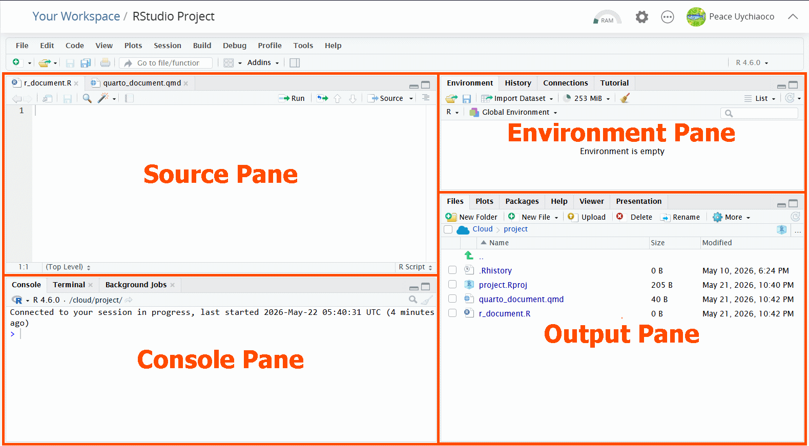
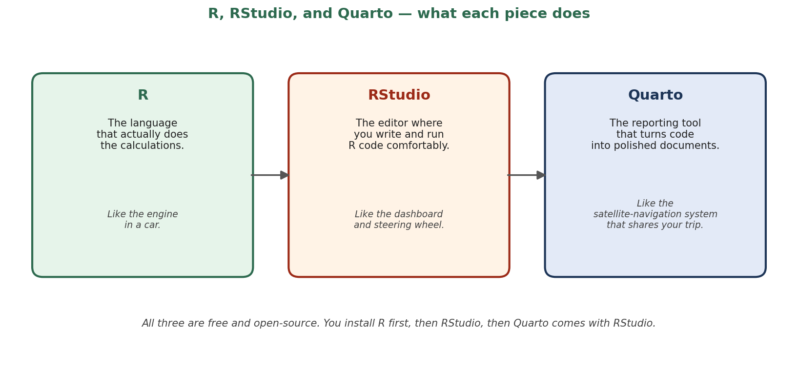
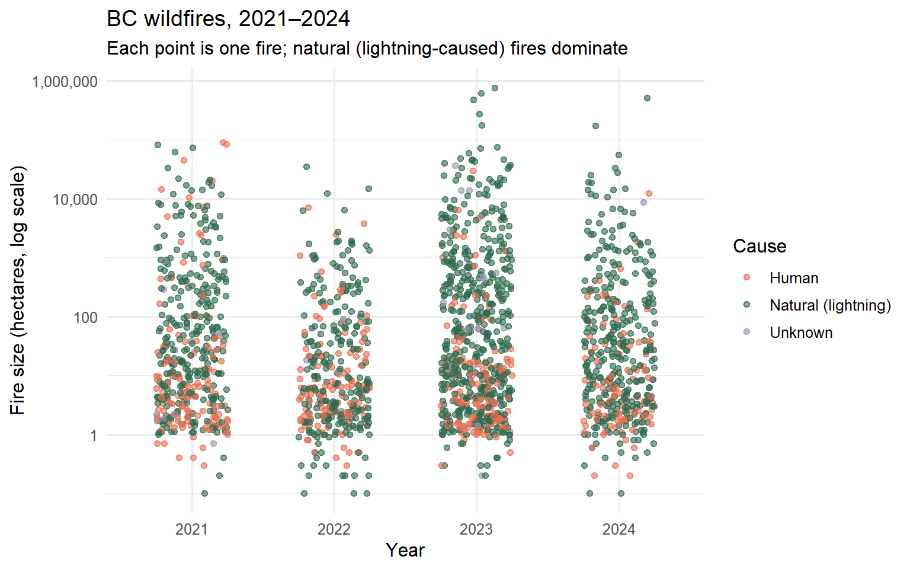
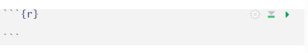

quarto --versionChapter 1: Why R? Why Now? Setting Up Your Reproducible Workspace
Install R, RStudio, and Quarto, set up a project, and write your first reproducible script.
Learning Objectives
By the end of this chapter, you will be able to:
- Explain why R is widely used in forestry and natural resources.
- Install R, RStudio, Quarto,
tidyverseand other packages. - Create an RStudio Project with a logical folder structure.
- Use the
herepackage for portable, project-relative file paths. - Render a first Quarto document that loads a real BC forestry dataset.
Why This Matters
Our objective: Understand why this course uses R instead of manual tools or software, and why we care so much about reproducible workflows.
R is the most widely used language for ecological and forestry data analysis, and it is free and open source. Equally important, R fits naturally into a reproducible research workflow: every analytical step is written down as code, anyone can re-run it, and your future self thanks you for organizing things properly today.
Compared to Excel or Google Sheets, R works much faster on the kind of large datasets that forestry produces think of inventory plots with hundreds of thousands of trees, or wildfire records spanning decades. R can also be automated: instead of clicking through menus, you write a script once and re-run it any time the data is updated. And R produces publication-quality graphs and tables in the same workflow that does the analysis.
Real examples of R in BC forestry and natural resources:
- UBC Faculty of Forestry researchers use R for tree-growth modelling, biodiversity analysis, and remote-sensing workflows.
- Parks Canada and the BC Ministry of Forests use R to analyze long-term ecological monitoring data from permanent sample plots.
- BC Wildfire Service uses R-based fire behaviour models and post-fire severity assessments to plan suppression and recovery.
- Forest carbon accounting projects across Canada use R to convert tree inventory data into province-level greenhouse gas estimates.
Datasets Used in This Chapter
| Dataset | Source | Format | Role |
|---|---|---|---|
nfdb_fires_2021_2024.csv |
Canadian National Forestry Database (NFDB), Natural Resources Canada | CSV (attribute table from the NFDB polygon shapefile) | Demo dataset for our first plot |
R built-in trees |
Base R | data frame | Comparison example only |
The NFDB wildfire dataset contains every reported wildfire in Canada from 2021 to 2024, with one row per fire and columns for the year, source agency (province), size in hectares, and cause. It is published openly at https://cwfis.cfs.nrcan.gc.ca/datamart. For this chapter we will focus on the 1,929 wildfires that occurred in British Columbia.
Installation Walkthrough: R, RStudio, Quarto, tidyverse
Our objective: Install the three tools (R, RStudio, Quarto) that everything in this course depends on, plus the tidyverse package collection.
You only do this once on your computer. After this section, you will not need to install anything again for the rest of the course.
Step 1: Install R
R is the programming language that runs your calculations. Download and install it from https://cloud.r-project.org/ and follow the instructions for your operating system:
- Windows: Go directly to https://cloud.r-project.org/bin/windows/base/ and click the download link.
- macOS: Go directly to https://cloud.r-project.org/bin/macosx/ and download the most recent version. You will also need to install XQuartz before installing R.
- Linux: Go directly to https://cloud.r-project.org/ and follow the instructions for your specific distribution.
Step 2: Install RStudio
RStudio is the editor for R and Quarto files (an IDE Integrated Development Environment) where you will actually write and run your R code. Download the free RStudio Desktop version from https://posit.co/downloads.
If you cannot install RStudio Desktop on your machine for any reason, the free Posit Cloud is a fully functional online alternative. Note that on Posit Cloud you have to install tidyverse separately for every new project.
Once you open RStudio,

Step 3: Install Quarto
Quarto is the reporting tool that turns your R code into nicely formatted documents, slides, and books. Quarto is bundled with recent versions of RStudio, so if you installed RStudio in Step 2, you already have it.
To confirm Quarto is installed, open RStudio and look for the Console pane and go to the Terminal tab for the command:
If you see a version number, you are good to go. If not, download Quarto from https://quarto.org/docs/get-started/.
Step 4: Install the tidyverse package collection
Our objective: Install one set of packages that will do most of the heavy lifting in this course.
The tidyverse is a collection of R packages designed to work together for data science. Open RStudio, click the Console tab, and type:
install.packages("tidyverse")You only need to install a package once. After that, every time you start a new R session, you load it with:
library(tidyverse)The full set of packages inside tidyverse is shown below. You can load them all at once with library(tidyverse), or load them one at a time if you prefer.
| Package | Load with | Purpose |
|---|---|---|
| ggplot2 | library(ggplot2) | Creating graphs and visualizations |
| dplyr | library(dplyr) | Manipulating data frames (filter, select, summarise) |
| tidyr | library(tidyr) | Reshaping and tidying tables (pivot_longer, pivot_wider) |
| readr | library(readr) | Reading and writing CSV files efficiently |
| purrr | library(purrr) | Applying functions over lists and vectors |
| tibble | library(tibble) | A modern, friendlier version of data frames |
| stringr | library(stringr) | Working with text strings |
| forcats | library(forcats) | Working with categorical variables (factors) |
| lubridate | library(lubridate) | Handling dates and date-time data |
We will also need to install a few more libraries
install.packages("here", "janitor", "skimr",
"scales", "patchwork", "plotly",
"sf", "terra", "tmap", "leaflet",
"knitr", "kableExtra", "gt",
"learnr", "shiny")
From Spreadsheets to Reproducible Code
Our objective: See why writing a short R script is more trustworthy than the same calculation in a spreadsheet.
Before you write a single line of analysis, you need a workspace that supports this kind of work. This chapter sets up the foundation that every subsequent chapter relies on.
Most natural-resource analyses begin in a spreadsheet. That is fine for data entry, but spreadsheets quickly become unreproducible: cells get edited by hand, formulas drift, and nobody remembers what was changed. R replaces that workflow with scripts, instructions that produce the same answer every time.
# Three lines that show the philosophy
tree_heights_m <- c(18.2, 21.5, 17.9, 25.3, 19.6)
mean_height <- mean(tree_heights_m)
mean_height[1] 20.5RStudio Projects and here()
Our objective: Organize all the files for one analysis (scripts, data, outputs) into a single folder that can be shared with anyone and never have to edit a file path again.
An RStudio Project is a self-contained folder that keeps your scripts, data, and outputs together. Always start a new analysis by creating a Project: in RStudio, choose File → New Project and select the New Directory.
In the Output pane select the Files tab, click the new file button and create an R Script. We can run code like the one below in the R script file, you can copy and the code below onto R studio.
The here package will make your code more portable: it runs on your laptop, on a colleague’s computer, and on a server, with no path edits.
library(here)
# here() always points to your project root
here()[1] "C:/Users/Peace Uychiaoco/Downloads/WL 2026 - Forestry Statistics/ch01-setup (5222026)"# accesses the "nfdb_fires_2021_2024.csv" from the "data" folder in the same directory as your project
here("data", "nfdb_fires_2021_2024.csv")[1] "C:/Users/Peace Uychiaoco/Downloads/WL 2026 - Forestry Statistics/ch01-setup (5222026)/data/nfdb_fires_2021_2024.csv"Organizing and Naming R Project Files
tibble::tribble(
~Folder, ~Contains,
"data/", "Raw and cleaned datasets",
"R/", "Reusable functions",
"scripts/", "Numbered analysis scripts",
"outputs/", "Saved tables, figures, derived data",
"reports/", "Quarto reports and rendered HTML/PDF",
"renv/", "Locked package versions (added in Ch. 13)"
) |>
knitr::kable()| Folder | Contains |
|---|---|
| data/ | Raw and cleaned datasets |
| R/ | Reusable functions |
| scripts/ | Numbered analysis scripts |
| outputs/ | Saved tables, figures, derived data |
| reports/ | Quarto reports and rendered HTML/PDF |
| renv/ | Locked package versions (added in Ch. 13) |
Real Forestry Application
Our objective: Confirm that everything we installed works, by loading a real BC wildfire dataset and producing a meaningful plot in one short script.
This is the kind of plot a wildfire analyst or fire-ecology researcher might create as a first look at the data: how many fires happened each year in British Columbia between 2021 and 2024, and how many hectares did each one burn?
# Read the wildfire data from the data/ folder
fires <- read_csv(here("data", "nfdb_fires_2021_2024.csv"))
# Keep only BC fires with a recorded size, and label the cause.
# NFDB cause codes: N = Natural (mostly lightning), H = Human,
# H-PB = Human - prescribed burn, U = Unknown.
bc_fires <- fires |>
filter(SRC_AGENCY == "BC", SIZE_HA > 0) |>
mutate(Cause = case_when(
CAUSE == "N" ~ "Natural (lightning)",
CAUSE == "H" ~ "Human",
CAUSE == "H-PB" ~ "Prescribed burn",
TRUE ~ "Unknown"
))
# Plot: one point per fire, jittered by year, sized by hectares burned
ggplot(bc_fires, aes(x = factor(YEAR), y = SIZE_HA, colour = Cause)) +
geom_jitter(alpha = 0.6, width = 0.25, size = 1.5) +
scale_y_log10(labels = scales::comma) +
scale_colour_manual(values = c("Natural (lightning)" = "#2D6A4F",
"Human" = "#E76F51",
"Prescribed burn" = "#F4A261",
"Unknown" = "#8D99AE")) +
labs(x = "Year", y = "Fire size (hectares, log scale)",
title = "BC wildfires, 2021–2024",
subtitle = "Each point is one fire; natural (lightning-caused) fires dominate",
colour = "Cause") +
theme_minimal(base_size = 12)
Notebook-to-Report Writing Guidance
Our objective: Turn our graphs and analysis from R and tidyverse into an organized professional report through Quarto.
Creating a Quarto Document
To create a Quarto file, go the Output pane and select the Files tab. Click the new file button and create a Quarto Document.
In a Quarto Document, you can create formatted text like you would in Microsoft Word or any other text editor. One of the many advantages of Quarto is that formatting can be done by coding. This makes italic text and other formatted text easier to detect while writing. Rather than selecting on a separate menu to create a header, you can write # to make the text into a header. You can read more formatting tips on Quarto’s website here.
Basic text
*Italic text*
**Bold text**
***Bold and Italic text***
# Header 1
## Header 2
### Header 3An important feature of Quarto is the ability to embed an R code. To embed R code in your Quarto document, go to the top-right of the Source pane and press insert chunk on the top-right. If you select , the following will appear.

You can then insert the wildfire script we made earlier inside the grey box. When you share the Quarto document, the ggplot2 graph created will be shown. While that would make the Quarto document really awesome, you need to ensure that the graph and code being reported is understandable and organized. In every chapter we will have a note with guidelines to remind you how to format your Quarto Document report.
To export the Quarto document, you would click the  Render button above the Source pane. This will create a formatted
Render button above the Source pane. This will create a formatted .html file that can be shared.
With that, you have created an RStudio project, R file, a graph plot from a real forestry dataset, and a shareable Quarto document! You are now ready to dive into R programming.
🤖 AI Support for This Chapter
What AI Does Well Here
- Walk you through installation errors on Windows, macOS, or Linux.
- Explain the difference between R, RStudio, and Quarto in plain language.
- Suggest a folder structure for a specific kind of project (a thesis, a course, a paper).
- Help you write your first
ggplot2call when you know what you want to show but not the syntax.
Useful Keywords by Tool
- ChatGPT / Claude keywords: install error R macOS, R version compatibility, RStudio Pane, RStudio Project workflow, here package vs setwd
- GitHub Copilot keywords: (autocomplete in your scripts as you type best for boilerplate setup)
- Gemini keywords: Quarto installation tutorial, R for beginners environment setup
Example Prompt
“I just installed R 4.4.0 and RStudio on macOS Sonoma. When I run
install.packages(\"tidyverse\")I get [paste exact error]. What is the cause and how do I fix it?”
⚠️ Use AI Responsibly
✅ Guided Quiz
Question 1
Open RStudio. Identify the four panes by name and describe the primary purpose of each.
Question 2
Create a new RStudio Project called forestry-practice with subfolders data/, scripts/, and outputs/. Inside it, create a script that uses here() to print the absolute path of data/.
Question 3
Why is setwd() discouraged in shared analysis scripts? Provide an alternative.
Question 4
Using the wildfire dataset and the plotting code in Figure 1 as a starting point, modify the code to show only fires larger than 1,000 ha. How many points remain in the plot, and which cause dominates?
Reusable Outputs
Files produced in this chapter for use in later chapters:
| File | Contents | Used In |
|---|---|---|
forestry-r/ |
Your project folder with subfolders and an empty README.md | Every later chapter |
data/nfdb_fires_2021_2024.csv |
Canadian NFDB wildfire records, 2021–2024 | Ch. 4 (cleaning), Ch. 8 (visualization), Ch. 10 (time series) |
Further Reading
- R for Data Science (2e), Hadley Wickham et al. is the canonical free reference for modern R.
- Quarto Get Started Guide
- Project-oriented workflow (Jenny Bryan)
- Canadian National Forestry Database (NFDB) the open-data source for the wildfire dataset used in this chapter.
- BC Wildfire Service open data BC-specific fire statistics and reports.
- Quarto Formatting Options and Examples